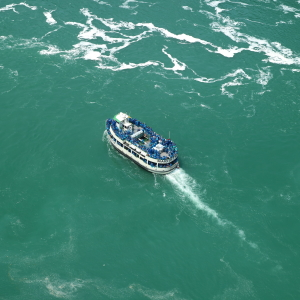
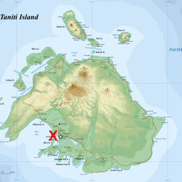
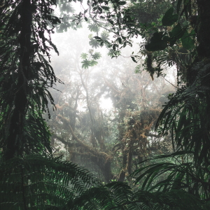
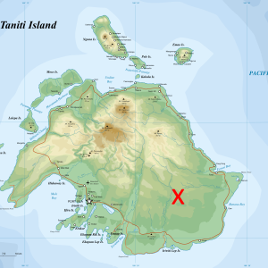
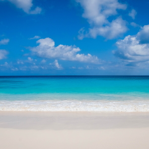

Most tourists spend most of their time in Taniti City, which boasts native architecture and nearby white, sandy beaches that encircle Yellow Leaf Bay. Other popular activities include boat or bus tours of the island, hikes in the rainforest, or visits to Taniti’s active volcano.
Taniti's Active Volcano
Take in the views as you zip past them with our forest ziplines.


Boat Tour
See the island from the outside. Get a chance to see the sea life.


Rainforest Hike
Hike through the rainforest. Taniti has a majestic rainforest.
Bus Tour
Take a tour of the island with a bus tour. See the island from the comfort of our bus tours.

Yellow Leaf Beach
Check out our beautiful beaches. Fine sand and clear blue waters.